-- 我的家乡 --
常州，又称龙城，地处长江之南、太湖之滨，是一座有3200多年左右历史的文化名城，境内风景名胜、历史古迹较多。
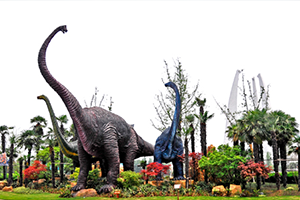
主题公园:教育、游乐、环艺、演艺、商业
- 中华恐龙园
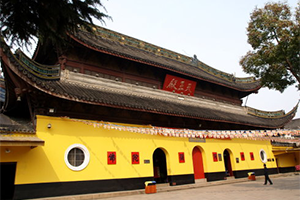 宝塔、照壁、观音、天王、罗汉、玉佛
- 天宁寺
 动漫艺术、游戏文化
动漫艺术、游戏文化
- 环球动漫嬉戏谷
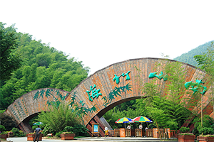 静湖、小鸟天堂、古官道、吴越第一峰
- 南山竹海
-- 喜爱这边的美食 --
砂锅鱼头，加蟹小笼包、大麻糕、虾饼、芝麻糖、蟹壳黄、常州银丝面、酒酿元宵、马蹄酥、三鲜馄饨、萝卜干
-- 旅游的第一个城市 --
苏州，古称吴，又称姑苏、平江，始建于公元前514年，历史悠久，人文荟萃，是昆剧和苏剧的故乡，有“上有天堂，下有苏杭”之称。
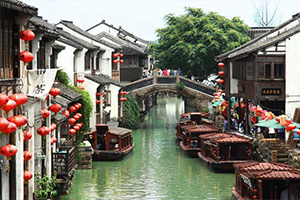 老街、玉涵堂、通贵桥、古戏台、商会博物馆
- 山塘街
 水城门、瓮 城、绞关石、吴门桥、瑞光塔
水城门、瓮 城、绞关石、吴门桥、瑞光塔
- 盘门
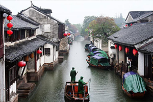 沈万三故居、富安桥、双桥、沈厅、怪楼
- 周庄
-- 喜爱苏州的古色古香 --
左边是园，右边是园。是塔是桥，是寺是河，是诗是画，是石径是帆船是假山。有客自海上来，有客自异乡来。
-- 大学所在地 --
淮安，地处长江三角洲地区，是古淮河与京杭大运河交点，历史悠久、人杰地灵，是总理周恩来同志的故乡。
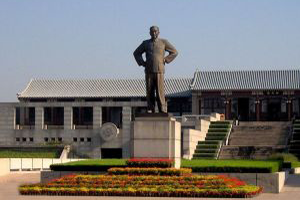 主馆、周恩来铜像、仿西花厅
- 周恩来纪念馆
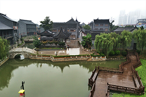 文化、军事、盐商、中医、美食、佛学文化
- 河下古镇
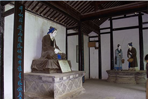 胯下桥、韩侯钓台、漂母祠、韩候祠
- 韩信故里
-- 喜爱淮安的掼蛋 --
饭前饭后，同学聚会，亲朋好友，只要是闲暇时光，总不忘摆好桌子凳子，四人一桌，掼蛋走起。
-- 第一个外省城市 --
青岛，又称岛城，地处山东半岛东南部沿海，是一座历史文化名城，拥有一个国家级新区。
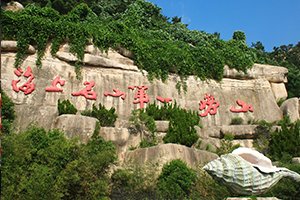 十二景：巨峰、明霞洞、蔚竹庵...
- 崂山
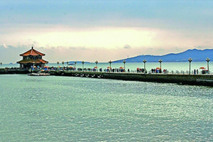 回澜阁、小青岛、海水浴场、海关大楼、海上皇宫
- 栈桥
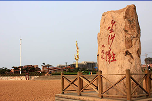 滨海木栈道、景观长廊、凉亭、水车、渔船
- 金沙滩
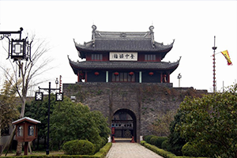 水城门、瓮 城、绞关石、吴门桥、瑞光塔
- 盘门
-- 喜爱青岛的海 --
远远地便能看见海，有清爽的海风、低吟的海浪，脚下松软的沙子被人们踩踏出无数行者的脚印，潮起潮落又一并被海水带走，沙滩上被冲刷得不留一点痕迹。
-- 最想去的旅游城市 --
巴黎（Paris），法国的首都，是欧洲第二大城市，誉为时尚之都，世界花都,浪漫之都，艺术之都。
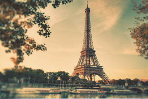 巴黎的标志之一，俗称“铁娘子”。
- 埃菲尔铁塔
 世界四大博物馆之首，藏有各国艺术珍品
世界四大博物馆之首，藏有各国艺术珍品
- 卢浮宫
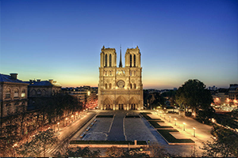 哥特式建筑，宗教、文化、建筑艺术
- 巴黎圣母院
-- 喜爱巴黎的梦幻 --
巴黎不仅仅是个地方，它已经成了一种精神状态。无论你是谁，都可以在这个既怀旧又前卫，既宁静又喧嚣，既国际化又本土化的城市找到自己需要的那一剂量心灵解药，到过巴黎的，一定不会再稀罕天堂